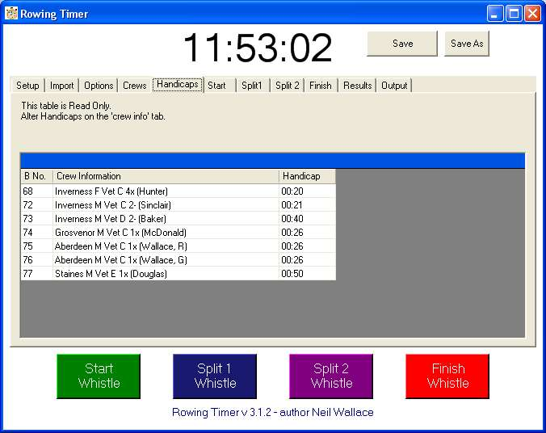

Handicap Tab
Veteran handicapping is an odd issue.
Under most current regimes, the size of handicaps applied varies with the duration of the event.
Handicaps are applied retrospectively, based on the fastest "Veteran A" or "Open" crew of the day.
To my thinking this is imprecise. If Leander entered a typical Scottish Head Race, for instance,
would handicaps come tumbling down right accross the board?
The higher categories would benefit from this... or put another way... are penalised whever an truly elite crew doesn't race.
When I find the correct formulae and/or tables, this tab is where you will apply them in future versions of rowing timer.
